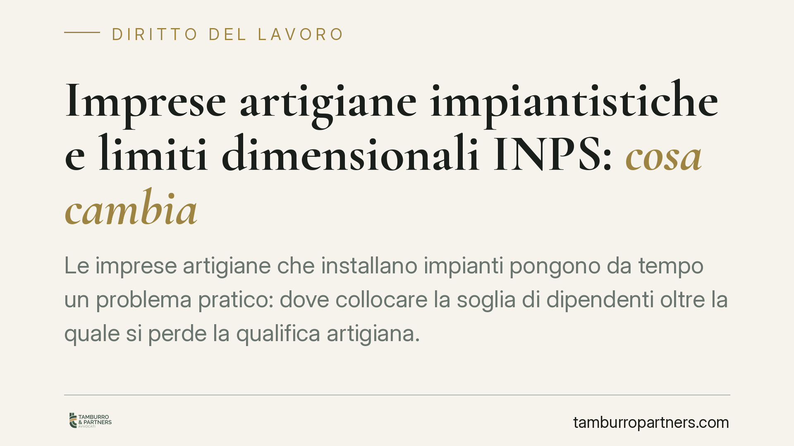

Imprese artigiane impiantistiche e limiti dimensionali INPS: cosa cambia
Le imprese artigiane che installano impianti pongono da tempo un problema pratico: dove collocare la soglia di dipendenti oltre la quale si perde la qualifica artigiana. La questione incide sull'inquadramento previdenziale, sul rapporto con le Casse edili e sui possibili recuperi contributivi. Vediamo il quadro normativo e cosa conviene verificare prima di consolidare una posizione.

Il contesto
La qualifica artigiana non è un'etichetta formale: condiziona l'inquadramento previdenziale, gli obblighi contributivi e, nel settore impiantistico, il possibile assoggettamento alla disciplina delle Casse edili. Il nodo ricorrente riguarda i limiti dimensionali, cioè il numero massimo di dipendenti compatibile con il mantenimento della qualifica.
Per le imprese di installazione impianti il tema è particolarmente sensibile, perché queste attività si collocano in una zona grigia tra lavorazioni tecniche e settore delle costruzioni. La corretta collocazione produce effetti concreti sull'entità dei versamenti e sul rischio di contestazioni.
Inquadramento normativo
I limiti dimensionali delle imprese artigiane sono fissati dall'art. 4 della L. 443/1985 (legge quadro sull'artigianato). La norma non indica una soglia unica: distingue le imprese a seconda della tipologia di attività, differenziando, tra l'altro, le lavorazioni in serie e non in serie, le lavorazioni artistiche e tradizionali, le imprese di costruzioni edili e quelle di trasporto, con soglie di dipendenti variabili.
È importante un chiarimento di metodo: la riconduzione delle imprese impiantistiche non prevalentemente edili all'una o all'altra fascia di soglia non discende in modo automatico dal testo di legge, ma è frutto di interpretazione applicativa. Il dato testuale va quindi integrato con gli orientamenti amministrativi e con la prassi previdenziale di volta in volta vigente.
Per questa ragione, prima di attribuire a una singola impresa una soglia dimensionale precisa, è indispensabile verificare la disciplina di prassi effettivamente in vigore alla data di riferimento, consultando le fonti ufficiali INPS e gli eventuali orientamenti del Ministero del Lavoro. Le circolari e i messaggi dell'Istituto, così come i recenti orientamenti ministeriali resi in sede di interpello, possono incidere in modo significativo sulla collocazione dell'impresa e vanno controllati nel numero, nella data e nell'oggetto esatti.
Il punto delicato: la nozione di prevalenza
Il cuore della questione è stabilire quale sia l'attività prevalente dell'impresa. Un'impresa che installa impianti può svolgere, accanto al montaggio, opere di natura edile: tracce, scassi, ripristini, demolizioni parziali.
La prevalenza non si determina sulla base del codice ATECO dichiarato, che ha valore meramente classificatorio. Rileva l'attività effettivamente e concretamente esercitata, ricostruita attraverso elementi oggettivi: contratti, fatturato per tipologia di lavorazione, mansioni dei dipendenti, attrezzature impiegate.
Un'impresa che si qualifica come impiantistica ma che, nei fatti, svolge in misura preponderante opere edili può essere riqualificata dall'Istituto, con conseguente spostamento della soglia dimensionale e, potenzialmente, assoggettamento alla contribuzione propria del settore edile. L'esito pratico può tradursi in recuperi contributivi e sanzioni anche rilevanti.
Implicazioni pratiche
Per l'impresa impiantistica i profili da presidiare sono essenzialmente tre.
Il primo riguarda il rapporto con le Casse edili: una collocazione errata può comportare l'obbligo retroattivo di iscrizione e versamento, con richieste che coprono periodi pregressi.
Il secondo attiene alla documentazione della prevalenza: in caso di verifica, l'onere di dimostrare la natura effettivamente impiantistica dell'attività ricade sull'impresa, che deve poter esibire riscontri coerenti e aggiornati.
Il terzo riguarda le dichiarazioni rese all'Istituto. Le autocertificazioni sull'attività svolta e sull'organico sono soggette alle responsabilità previste dal DPR 445/2000: le dichiarazioni non veritiere espongono a conseguenze penali e alla decadenza dai benefici eventualmente conseguiti. La leggerezza nella compilazione non è mai un'opzione.
Cosa fare in concreto
- Verificate la prassi vigente. Prima di consolidare l'inquadramento, controllate su fonte ufficiale INPS i messaggi e le circolari attuali in materia di soglie dimensionali per le imprese impiantistiche, con numero e data esatti.
- Ricostruite la prevalenza su basi oggettive. Analizzate fatturato per tipologia di lavorazione, contratti e mansioni, documentando la natura effettivamente impiantistica dell'attività.
- Allineate ATECO e attività reale. Se il codice dichiarato non riflette l'attività prevalente, valutate la rettifica, consapevoli che conta la sostanza, non la classificazione formale.
- Controllate il profilo contributivo. Verificate l'eventuale esposizione verso le Casse edili e mappate i rischi di recupero per i periodi pregressi.
- Presidiate le autocertificazioni. Compilate le dichiarazioni all'Istituto con riscontri documentali, ricordando le responsabilità ex DPR 445/2000.
È opportuna una verifica con il consulente del lavoro di fiducia prima di formalizzare o modificare l'inquadramento, così da evitare contestazioni successive.
Disclaimer
Contributo informativo a cura di Tamburro & Partners - Avv. Giuseppe Tamburro. Non costituisce parere legale.
Ogni storia di lavoro ha i suoi tempi.
Se gestisci HR e vuoi un confronto su contenzioso, ispezioni o licenziamenti, scrivi allo studio. Ti rispondiamo entro un giorno lavorativo.